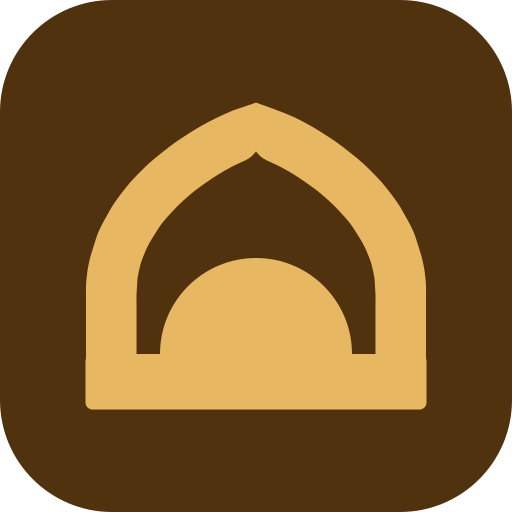

Prayer & focus app for Uzbekistan. Every value traced to design-system.md, measured from the reference at 1.508 px/pt.
#F8F2EA
surface #F6EFE6
hero glow
ink #0F0E0C
numerals #50320F
accent #E66A43
gutter 20pt · cards 82pt · gaps 8pt
Onest 10 / 12 / 16 / 17 / 20 / 78